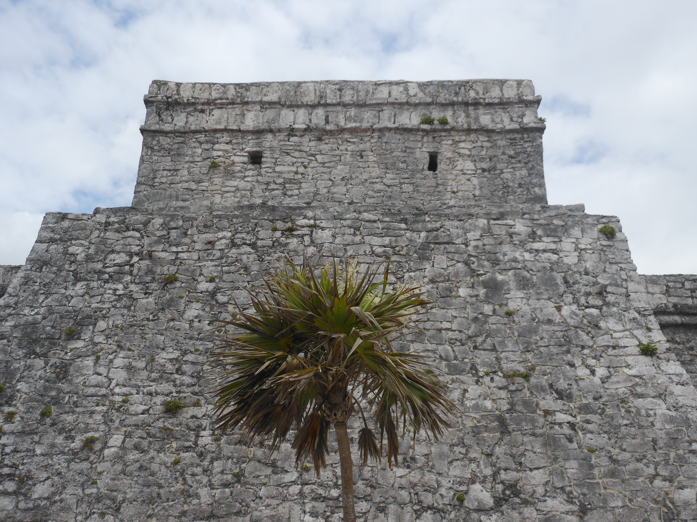
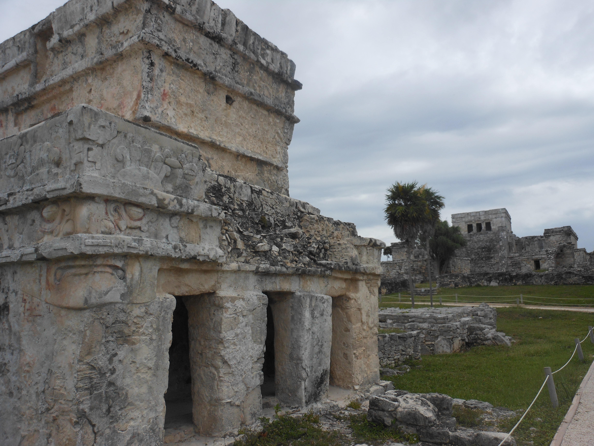
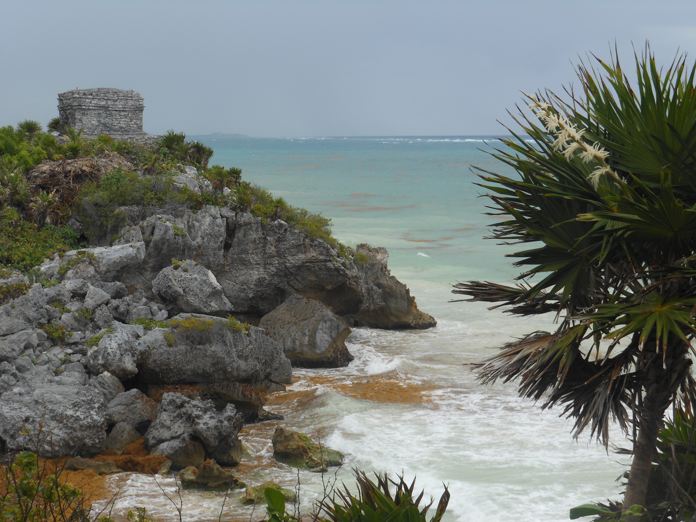
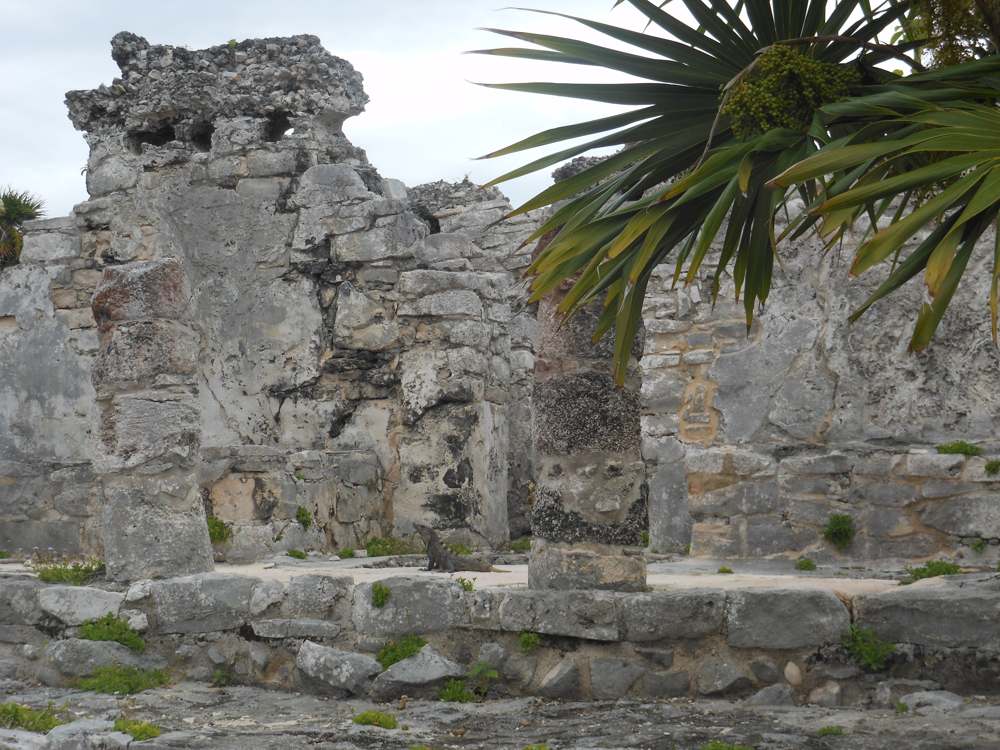
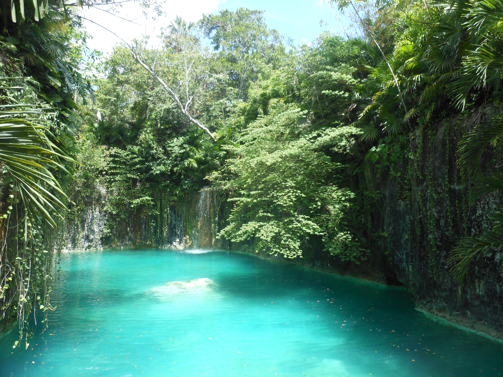
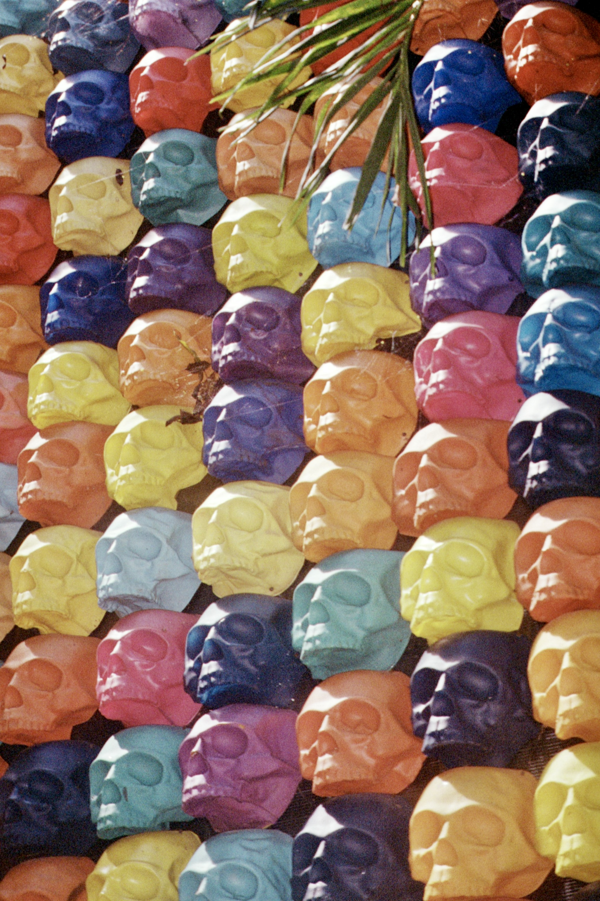
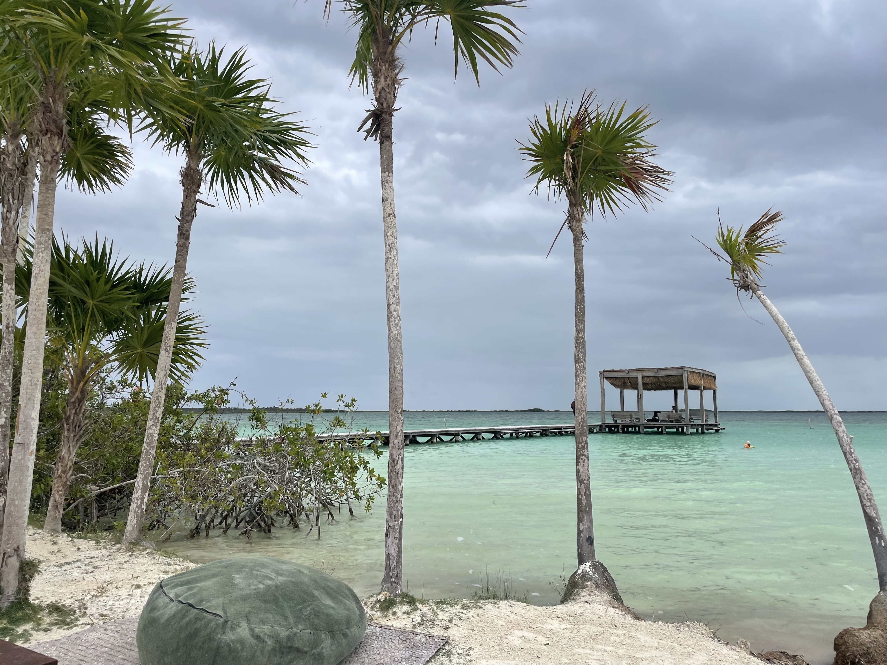
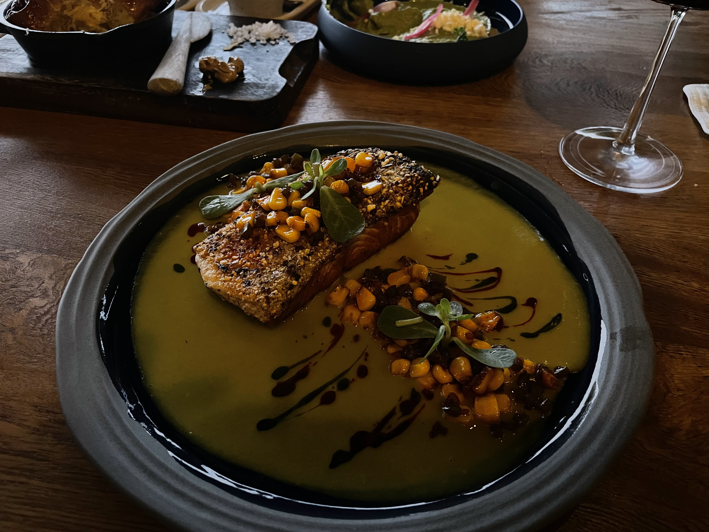
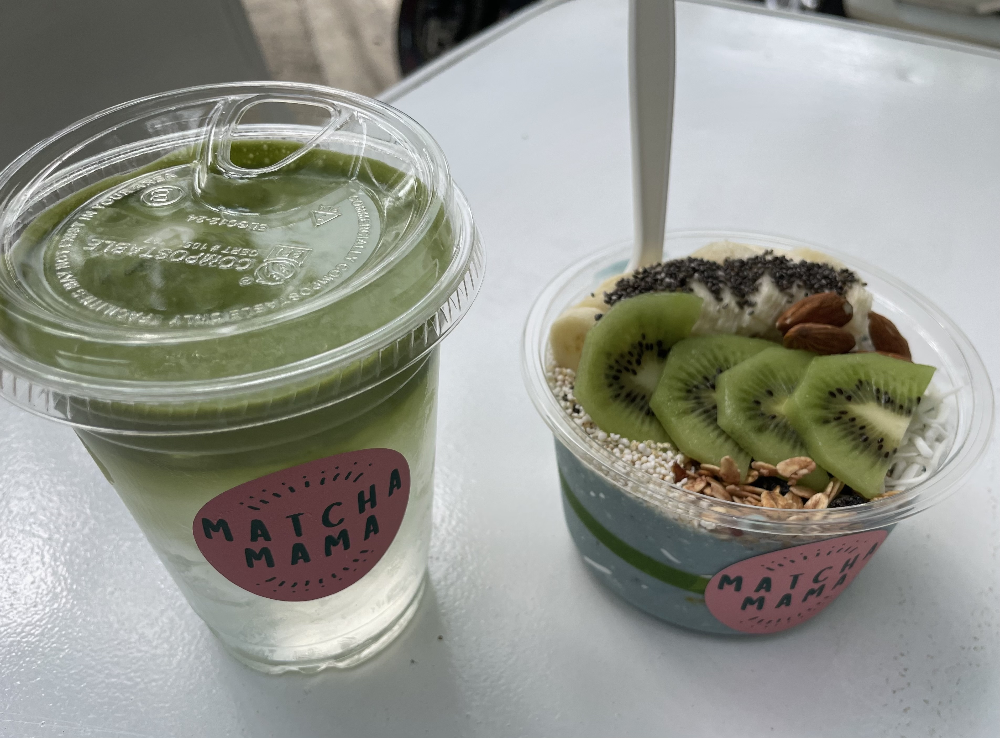
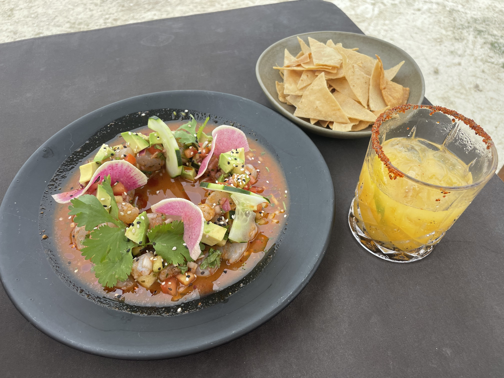

There's something surreal about standing on the cliffs of El Castillo, looking out at the turquoise Caribbean below, and realizing that the Maya built this over 700 years ago. Tulum was one of the last cities built and inhabited by the Maya: a walled coastal fortress that served as a major port for trade. Walking through it today, you can still feel the weight of that history.
This trip was my third time in Tulum, and I went in wanting more than just beaches and nightlife. I wanted to learn more about and experience the land, the culture, and the people who shaped it centuries before colonization.
El Castillo and the Tulum Archaeological Site

The Tulum ruins sit on a 12-meter cliff overlooking the Caribbean Sea. El Castillo, the largest structure, was likely used as a lighthouse: its windows are positioned so that when a fire was lit inside, the light guided canoes through the reef below.



Cenotes: The Maya's Sacred Portals
For the Maya, cenotes weren't just swimming holes; they were sacred entries to Xibalba, the underworld. The Yucatán Peninsula is essentially a limestone shelf with no rivers on the surface. Instead, water carved massive underground cave systems over millions of years, and when the limestone roof collapses, you get a cenote: a natural sinkhole filled with crystal-clear water.
I visited Atik Tulum and Vesica during the trip. Vesica had more of a curated experience with yummy food and music, but the cenote itself is still stunning. They also offer planned activities, like yoga, and you can book massages. The staff here is incredible! I spent most of the day here relaxing by the crystal water: taking little dips when I needed to refresh a bit and tasting what their menu had to offer!
Contemporary Art in the Jungle: Atik and Azulik Uh May


Atik Tulum included skull art installations and multiple swim spots. I went in the morning and basically got the whole place to myself. The cenote there is beautiful, it almost didn't feel real.
About 40 minutes outside of Tulum Centro is Azulik Uh May, a contemporary art museum built into the jungle. The architecture itself is the art: organic, concrete winding structures laced in bejuco (a local vine). Honestly, probably wouldn't come here again. It was a bit far and underwhelming for what it's worth.

The highlight of my trip, apart from visiting the archeological site, was my time at Sipalitos laguna club. The water was perfect, and so were the food and drinks. I wish I had stayed here longer before I headed over to the Azulik Uh May art museum.

Architecture: Babel Tulum

I stayed at Babel Tulum, and the architecture throughout the town was one of my favorite parts of the trip. Babel is a colonial pink and terracotta building with lush tropical overgrowth: vines crawling over arches, bougainvilleas hanging over stairs. It's beautiful, spacious, and I got a great price for what the stay had to offer. Will probably only ever stay here when I come again.
The Food



Not least: the food. The first day, I grabbed dinner at Atta, a restaurant built around a natural cenote, and it was one of the most memorable meals I had. The staff was very attentive and I got the whole place to myself when I was there. Tulum's infamous Matcha Mama was perfect for morning energy. Many of the cenote and beach clubs offer an array of irresistable yummy food. Honestly, it's just always good. Of course, on my last day I had to stop at Burrito Amor for some fresh, affordable burritos for my airplane trip back home. The Yucatecan flavors (achiote, habanero, citrus) are distinct from the Mexican food I grew up eating, and I loved tasting the menus at any place I stopped at.
What I Spent
I tracked every peso. Four days in Tulum, including flights from Portland, an Airbnb, a rental car, cenote day passes, restaurants, museum entries, and optional spending came to $1,098 USD. Day-to-day spending was surprisingly manageable: cenote passes ranged from $12-20, and meals rarely topped $25. Most of the cenote/beach clubs have a minimum spend requirement of about $40, but the food is so good it's usually no problem.
Fin
Tulum reminded me why I care about the intersection of culture and technology. The Maya were astronomers, engineers, architects, and artists: all at once. They built cities aligned to the stars, created a writing system, developed advanced mathematics (including the concept of zero), and engineered water systems that still function today. Walking through what remains of their civilization, I kept thinking about how much of what we call "innovation" today has roots in thinking that's thousands of years old.
I will be back next time I need good food, good views, and some naps by cenotes.